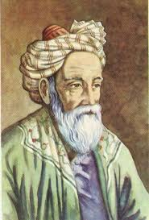

Présentation
Ghiyath al-Din Abu al-Fath Umar ibn Ibrahim Al-Nisaburi al-Khayyami, connu sous le nom d'Omar Khayyam, était un mathématicien, astronome, philosophe et poète perse.
| Nom complet | Ghiyath al-Din Abu al-Fath Umar ibn Ibrahim |
| Dates | 1048 - 1131 |
| Lieu de naissance | Nishapur, Iran |
| Domaines | Mathématiques, Astronomie, Poésie |
| Innovation principale | Résolution des équations cubiques |
🎯 Contributions Scientifiques
- Équations cubiques - Résolution géométrique systématique
- Calendrier jalali - Plus précis que le calendrier grégorien
- Géométrie - Théories parallèles et proportions
- Algèbre - Classification des équations
- Astronomie - Réforme du calendrier persan
📐 Réforme du Calendrier
Omar Khayyam a dirigé la création du calendrier jalali, d'une précision exceptionnelle avec une erreur d'un jour seulement tous les 5,000 ans.
📅 Calendrier Jalali
Système calendaire d'une précision remarquable
📐 Géométrie Algébrique
Lien entre algèbre et géométrie
🎭 Double Talent
Génie scientifique et poétique exceptionnel
📖 Héritage Littéraire
Bien que célèbre pour ses Robaiyat (quatrains), son œuvre scientifique reste fondamentale pour le développement des mathématiques.